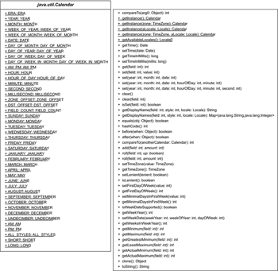

11.4 Calendar und GregorianCalendar
Ein Kalender unterteilt die Zeit in Einheiten wie Jahr, Monat, Tag. Der bekannteste Kalender ist der gregorianische Kalender, den Papst Gregor XIII. im Jahre 1582 einführte. Vor seiner Einführung war der julianische Kalender populär, der auf Julius Cäsar zurückging – daher auch der Name. Er stammt aus dem Jahr 45 vor unserer Zeitrechnung. Der gregorianische und der julianische Kalender sind Sonnenkalender, die den Lauf der Erde um die Sonne als Basis für die Zeiteinteilung nutzen; der Mond spielt keine Rolle. Daneben gibt es Mondkalender wie den islamischen Kalender und die Lunisolarkalender, die Sonne und Mond miteinander verbinden. Zu diesem Typus gehören der chinesische, der griechische und der jüdische Kalender.
Mit Exemplaren vom Typ Calendar ist es möglich, Datum und Uhrzeit in den einzelnen Komponenten wie Jahr, Monat, Tag, Stunde, Minute, Sekunde zu setzen und zu erfragen. Da es unterschiedliche Kalendertypen gibt, ist Calendar eine abstrakte Basisklasse, und Unterklassen bestimmen, wie konkret eine Abfrage oder Veränderung für ein bestimmtes Kalendersystem aussehen muss. Bisher bringt die Java-Bibliothek mit der Unterklasse GregorianCalendar nur eine öffentliche konkrete Implementierung mit, deren Exemplare Daten und Zeitpunkte gemäß dem gregorianischen Kalender verkörpern. In Java 6 ist eine weitere interne Klasse für einen japanischen Kalender hinzugekommen. IBM hat mit International Components for Unicode for Java (ICU4J) unter http://icu.sourceforge.net/ weitere Klassen wie ChineseCalendar, BuddhistCalendar, JapaneseCalendar, HebrewCalendar und IslamicCalendar freigegeben. Hier findet sich auch einiges zum Thema Ostertage.
11.4.1 Die abstrakte Klasse Calendar
Die Klasse Calendar besitzt zum einen Anfrage- und Modifikationsmethoden für konkrete Exemplare und zum anderen statische Fabrikmethoden. Eine einfache statische Methode ist getInstance(), um ein benutzbares Objekt zu bekommen.
abstract class java.util.Calendar |
- static Calendar getInstance()
Liefert einen Standard-Calendar mit der Standard-Zeitzone und Standard-Lokalisierung zurück.
Neben der parameterlosen Variante von getInstance() gibt es drei weitere Varianten, denen ein TimeZone-Objekt und Locale-Objekt mit übergeben werden kann. Damit kann dann der Kalender auf eine spezielle Zeitzone und einen Landstrich zugeschnitten werden.
Abbildung 11.2: UML-Diagramm der Klasse Calendar
| Hinweis |
|
Calendar (bzw. GregorianCalendar) hat keine menschenfreundliche toString()-Methode. Der String enthält alle Zustände des Objekts: |
|
java.util.GregorianCalendar[time=1187732409256,areFieldsSet=true, |
11.4.2 Der gregorianische Kalender
Die Klasse GregorianCalendar erweitert die abstrakte Klasse Calendar. Sieben Konstruktoren stehen zur Verfügung; vier davon sehen wir uns an:
class java.util.GregorianCalendar |
- GregorianCalendar()
Erzeugt ein standardmäßiges GregorianCalendar-Objekt mit der aktuellen Zeit in der voreingestellten Zeitzone und Lokalisierung. - GregorianCalendar(int year, int month, int date)
Erzeugt ein GregorianCalendar-Objekt in der voreingestellten Zeitzone und Lokalisierung. Jahr, Monat (der zwischen 0 und 11 und nicht zwischen 1 und 12 liegt) und Tag legen das Datum fest. - GregorianCalendar(int year, int month, int date, int hour, int minute)
Erzeugt ein GregorianCalendar-Objekt in der voreingestellten Zeitzone und Lokalisierung. Das Datum legen Jahr, Monat (0 <= month <= 11 ), Tag, Stunde und Minute fest. - GregorianCalendar(int year, int month, int date, int hour, int minute, int second)
Erzeugt ein GregorianCalendar-Objekt in der voreingestellten Zeitzone und Lokalisierung. Das Datum legen Jahr, Monat (0 <= month <= 11), Tag, Stunde, Minute und Sekunde fest.
Abbildung 11.3: UML-Diagramm für GregorianCalendar
Neben den hier aufgeführten Konstruktoren gibt es noch weitere, die es erlauben, die Zeitzone und Lokalisierung zu ändern. Standardmäßig eingestellt sind die lokale Zeitzone und die aktuelle Lokalisierung. Ist eines der Argumente im falschen Bereich, löst der Konstruktor eine IllegalArgumentException aus.
| Hinweis |
|
Zum Aufbau von Calendar-Objekten gibt es nun zwei Möglichkeiten: undCalendar c = new GregorianCalendar(); Calendar c = Calendar.getInstance( new Locale("ja", "JP", "JP") ); |
11.4.3 Calendar nach Date und Millisekunden fragen
Da java.util.Date-Objekte zwar auf den ersten Blick Konstruktoren anbieten, die Jahr, Monat, Tag entgegennehmen, diese Konstruktoren aber veraltet sind, sollten wir den Blick auf GregorianCalendar lenken, wie wir das im vorangehenden Abschnitt gemacht haben.
Um von einem Calendar die Anzahl der vergangenen Millisekunden seit dem 1.1.1970 abzufragen, dient getTimeInMillis() (eine ähnliche Methode hat auch Date, nur heißt sie dort getTime()).
| Beispiel |
|
Bestimme die Anzahl der Tage, die seit einem bestimmten Tag, Monat und Jahr vergangen sind: int date = 1; |
| Hinweis |
|
Calendar und Date haben beide eine getTime()-Methode. Nur liefert die Calendar-Methode getTime() ein java.util.Date-Objekt und die Date-Methode getTime() ein long. Gutes API-Design sieht anders aus. Damit Entwickler aber keine unschönen cal.getTime().getTime()-Ausdrücke schreiben müssen, um vom Calendar die Anzahl der Millisekunden zu beziehen, ist getTimeInMillis() im Angebot. |
abstract class java.util.Calendar |
- final long getTimeInMillis()
Liefert die seit der Epoche (January 1, 1970 00:00:00.000 GMT, Gregorian) vergangene Zeit in Millisekunden. - final Date getTime()
Liefert ein Date-Objekt zu diesem Calendar.
11.4.4 Abfragen und Setzen von Datumselementen über Feldbezeichner
Das Abfragen und Setzen von Datumselementen des gregorianischen Kalenders erfolgt mit den überladenen Methoden get() und set(). Beide erwarten als erstes Argument einen Feldbezeichner – eine Konstante aus der Klasse Calendar –, der angibt, auf welches Datum-/Zeitfeld zugegriffen werden soll. Die get()-Methode liefert den Inhalt des angegebenen Felds, und set() schreibt den als zweites Argument übergebenen Wert in das Feld.
| Beispiel |
|
Führe Anweisungen aus, wenn es 19 Uhr ist: if ( Calendar.getInstance().get( Calendar.HOUR_OF_DAY ) == 19 ) |
Die folgende Tabelle gibt eine Übersicht der Feldbezeichner und ihrer Wertebereiche im Fall des konkreten GregorianCalendar.
abstract class java.util.Calendar |
Nun können wir mit den Varianten von set() die Felder setzen und mit get() wieder hereinholen. Beachtenswert sind der Anfang der Monate mit 0 und der Anfang der Wochentage mit 1 (SUNDAY), 2 (MONDAY), ..., 7 (SATURDAY) – Konstanten der Klasse Calendar stehen in Klammern. Die Woche beginnt in der Java-Welt also bei 1 und Sonntag, statt – wie vielleicht anzunehmen – bei 0 und Montag.
| Beispiel |
|
Ist ein Date-Objekt gegeben, so speichert es Datum und Zeit. Soll der Zeitanteil gelöscht werden, so bietet Java dafür keine eigene Methode. Die Lösung ist, Stunden, Minuten, Sekunden und Millisekunden von Hand auf 0 zu setzen. Löschen wir vom Hier und Jetzt die Zeit: Date date = new Date(); |
abstract class java.util.Calendar |
- int get(int field)
Liefert den Wert für field. - void set(int field, int value)
Setzt das Feld field mit dem Wert value. - final void set(int year, int month, int date)
Setzt die Werte für Jahr, Monat und Tag. - final void set(int year, int month, int date, int hourOfDay, int minute)
Setzt die Werte für Jahr, Monat, Tag, Stunde und Minute. - final void set(int year, int month, int date, int hourOfDay, int minute, int second)
Setzt die Werte für Jahr, Monat, Tag, Stunde, Minute und Sekunde.
| Hinweis |
|
Wo die Date-Klasse etwa spezielle (veraltete) Methoden wie getYear(), getDay(), getHours() anbietet, so müssen Nutzer der Calendar-Klasse immer die get(field)-Methode nutzen. Es gibt keinen Getter für den Zugriff auf ein bestimmtes Feld. |
Werte relativ setzen
Neben der Möglichkeit, die Werte entweder über den Konstruktor oder über set() absolut zu setzen, sind auch relative Veränderungen möglich. Dazu wird die add()-Methode eingesetzt, die wie set() als erstes Argument einen Feldbezeichner bekommt und als zweites die Verschiebung.
| Beispiel |
|
Was ist der erste und letzte Tag einer Kalenderwoche? Calendar cal = Calendar.getInstance(); |
Da es keine sub()-Methode gibt, können die Werte bei add() auch negativ sein.
| Beispiel |
|
Wo waren wir heute vor einem Jahr? Calendar cal = Calendar.getInstance(); |
Eine weitere Methode roll() ändert keine folgenden Felder, was add() macht, wenn etwa zum Dreißigsten eines Monats zehn Tage addiert werden.
abstract class java.util.Calendar |
- abstract void add(int field, int amount)
Addiert (bzw. subtrahiert, wenn amount negativ ist) den angegeben Wert auf dem (bzw. vom) Feld. - abstract void roll(int field, boolean up)
Setzt eine Einheit auf dem gegebenen Feld hoch oder runter, ohne die nachfolgenden Felder zu beeinflussen. Ist der aktuelle Feldwert das Maximum (bzw. Minimum) und wird um eine Einheit addiert (bzw. subtrahiert), ist der nächste Feldwert das Minimum (bzw. Maximum). - void roll(int field, int amount)
Ist amount positiv, führt diese Methode die Operation roll(field, true) genau amount-mal aus, ist amount negativ, dann wird amount-mal roll(field, false) aufgerufen.
In GregorianCalendar ist die Implementierung in Wirklichkeit etwas anders. Da ist roll(int, int) implementiert, und roll(int, boolean) ist ein Aufruf von roll(field, up ? +1 : –1).
Ihr Kommentar
Wie hat Ihnen das <openbook> gefallen? Wir freuen uns immer über Ihre freundlichen und kritischen Rückmeldungen.
 Jetzt bestellen
Jetzt bestellen


{kind=link}
{kind=link}